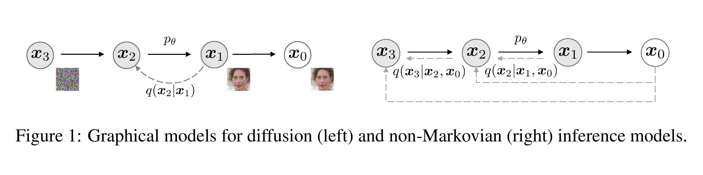
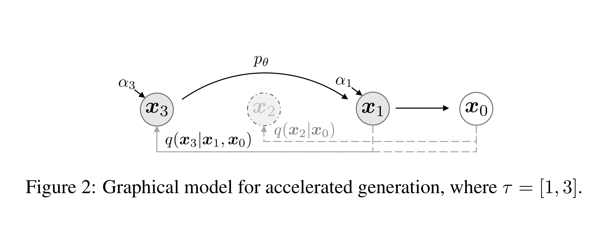
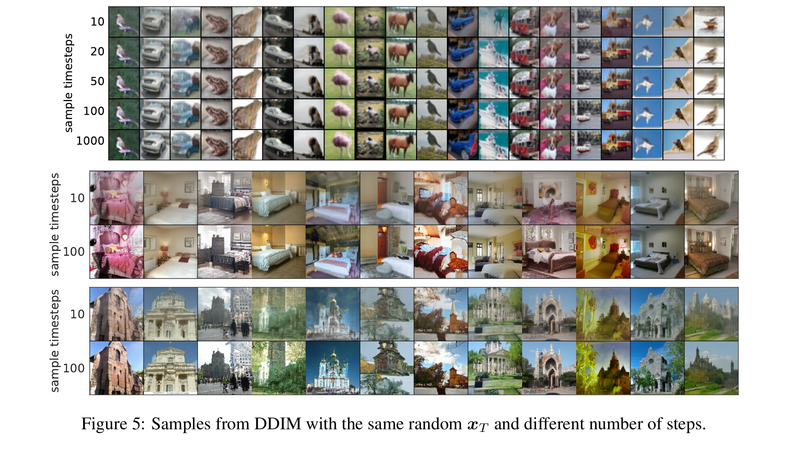
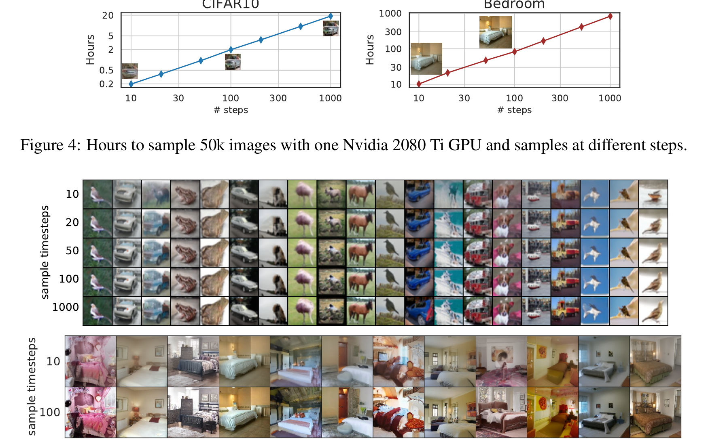

Denoising Diffusion Implicit Models
Jiaming Song, Chenlin Meng, Stefano Ermon · ICLR 2021 · arXiv:2010.02502
DDIM 通常不是重新训练一个新模型。它利用 DDPM 噪声预测器已经学会的各个边缘分布，换一条非马尔可夫、可确定、可跳步的生成轨迹。训练与采样被第一次清楚地解耦。
§1 它改了什么：路线，不是目的地
只要各时刻 $q(x_t|x_0)$ 保持不变，DDPM 的噪声回归目标并不关心潜变量之间采用哪一种联合分布。因此同一 $\epsilon_\theta$ 可以对应一族生成过程，其中 $\sigma_t=0$ 的确定性特例就是 DDIM。
展开原文 · Abstract
“Our non-Markovian processes can correspond to generative processes that are deterministic.”
§2 为什么同一个训练目标允许不同生成过程

1. DDPM 给出一个合法联合分布
相邻加噪构成马尔可夫链，但它不是产生相同边缘分布的唯一选择。
2. 损失只观察 $q(x_t|x_0)$
训练随机抽 $t$，合成 $x_t$ 并预测噪声，不会检查 $x_{t-1}$ 到 $x_t$ 的完整联合路径。
3. 因而推理可换路径
保持边缘不变后，可以选择随机或确定的反向更新，并跳过大量中间时间步。
2.2 一族共享边缘分布的推断过程
- $q(x_t|x_0)$
- 继续等于 $\mathcal N(\sqrt{\alpha_t}x_0,(1-\alpha_t)I)$；训练数据对不变。
- $q_\sigma(x_{t-1}|x_t,x_0)$
- 跨时刻的联合关系可随 $\sigma$ 改变。
- $\sigma_t$
- 决定每一步保留多少随机性；为零时，给定 $x_t$ 与模型预测后更新是确定的。
§3 DDIM 更新式：预测 $x_0$ + 指向 $x_t$ + 可选噪声
- 预测 $x_0$
- 先用当前噪声估计反推出模型认为的干净样本。
- 方向项
- 把预测重新放到下一个较低噪声级别。
- $\sigma_t\epsilon_t$
- 随机性。DDPM 对应一组非零 $\sigma_t$；DDIM 令它为零。
3.2 加速来自时间步子序列，不是网络变快

若训练总步数为 $T$，推理选择长度 $S\ll T$ 的递增子序列 $\tau$，然后按逆序执行。网络仍接收它训练时见过的噪声级别，但一次跨过更大的间隔。
3.3 $\eta$：在 DDIM 与 DDPM 间连续切换
- $\tau_i,\tau_{i-1}$
- 实际采用的子采样时间表中相邻两个噪声等级；它们不必是原 DDPM 的连续整数步。
- $\alpha_{\tau_i}$
- 该时间点保留下来的信号比例，决定从当前噪声层跨到下一层需要多大方差。
- $\eta$
- 统一缩放每一步重新注入的噪声：$\eta=0$ 时完全确定，$\eta=1$ 时恢复与 DDPM 方差匹配的随机更新。
- $\sigma_{\tau_i}$
- 它只改变采样轨迹的随机性，不改变训练好的噪声预测器；这就是 DDIM 能直接复用 DDPM 权重的原因。
§4 论文证据：10–100 步已能保留主要语义


§5 局限：跳得越远，数值误差越大
少步并非免费：极端跳步会牺牲细节与 FID；确定性路径降低采样随机性；原始 DDIM 是较早的一阶离散化思路，后来 DPM-Solver、EDM、flow/ODE solver 等继续优化少步采样。
§6 对 World Action Model 的意义
视频世界模型和动作扩散策略往往必须在机器人控制周期内反复生成。DDIM 的思想告诉我们：训练目标、网络骨干和在线采样器可以分别设计。一个强模型若仍需数百步推理，在控制系统里可能毫无用处。
§7 一页记住
没变：噪声预测训练、各时刻边缘分布。
变了：潜变量联合、随机性、访问的时间步。
收益：可跳步、可确定、可反演，通常快一个数量级。
边界：少步质量仍取决于离散化与模型能力。
Classifier-Free Guidance 不再讨论“走哪条去噪路径”，而是讨论“条件应该拉多用力”：用同一个网络的条件与无条件预测，换取可调的忠实度—多样性。